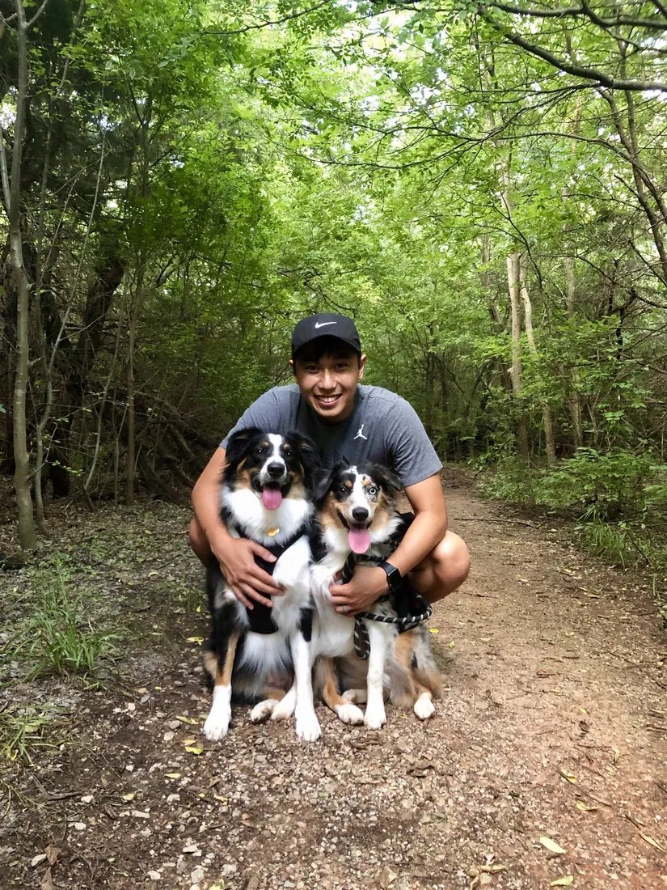
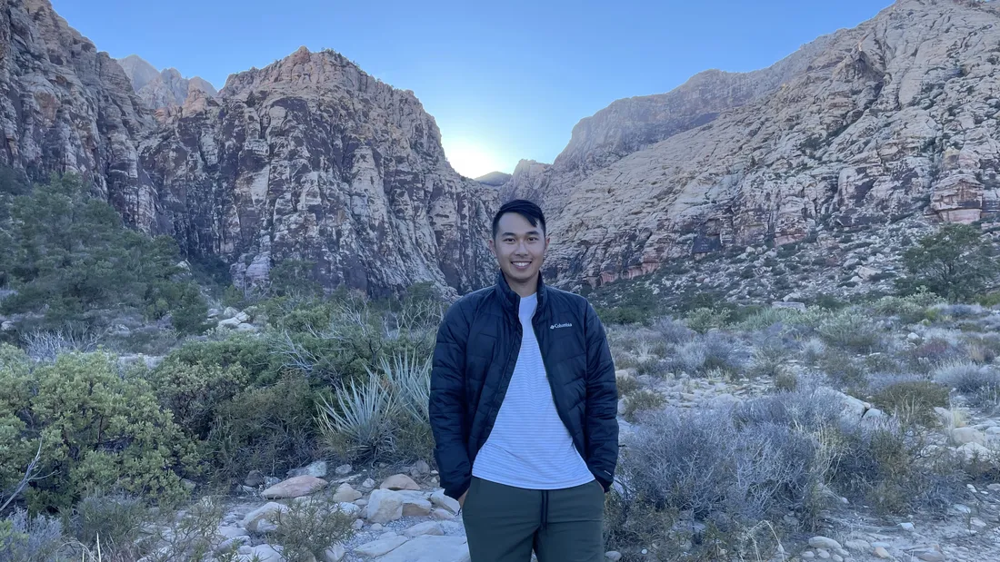
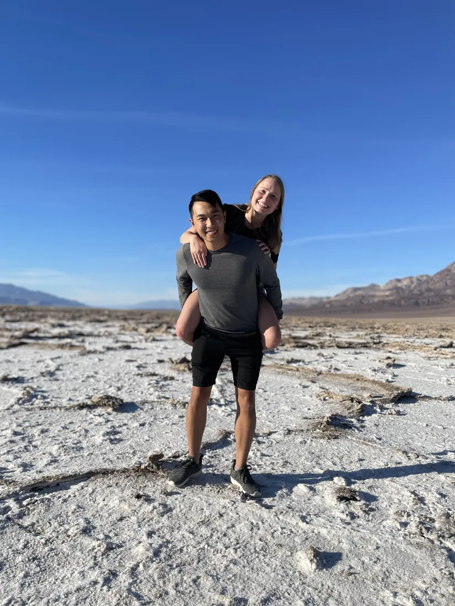

About me
I graduated from the University of Oklahoma with a dual degree: a B.S. in Meteorology and a B.A. in Mathematics. For my Master's, I stayed at OU at the Advanced Radar Research Center, advised by Dr. David Bodine and Dr. Anthony Reinhart, and used large-eddy vortex simulations to study how surface terrain affects tornado dynamics.
For my doctoral research, advised by Dr. Michael Coniglio and Dr. Erik Rasmussen, I did a detailed case study of the 17 May 2019 tornadic supercell observed during TORUS, using multi-Doppler wind syntheses and thermodynamic retrievals. Both projects are published as first-author papers (JAS, 2020 and MWR, 2025). I then did a postdoc at the Cooperative Institute for Severe and High-Impact Weather Research and Operations (CIWRO), where I analyzed supercell updrafts across many cases using multi-Doppler analyses.
In September 2025 I joined Rainmaker Technology Corporation as a Meteorological Radar Scientist. On the research team, I design and optimize radar-based QPE products and analyze radar and other meteorological data to improve cloud seeding strategies. The goal is to support sustainable water resource management through responsible weather modification.
Outside of work, I enjoy golfing, watching college football, and spending time with my wife and our two dogs. I also love traveling and trying new cuisines.




Experience
-
Meteorological Radar Scientist, Rainmaker Technology Corporation
Radar QPE and seeding-signature validation, analysis tooling, and reporting. More →
-
Postdoctoral Research Associate, CIWRO
Multi-Doppler and diabatic Lagrangian analyses of TORUS supercells; CM1 simulations of wind-profile effects; DELTA and LIFT field campaigns.
-
Graduate Research Assistant, CIWRO & OU School of Meteorology
Doctoral research on the 17 May 2019 TORUS supercell; PERiLS, TORUS, and TORUS-LiTE field campaigns.
-
Graduate Research Assistant, Advanced Radar Research Center
Terrain effects on tornado dynamics using large-eddy simulations; Atmospheric Imaging Radar field work.
-
Teaching & mentoring, OU School of Meteorology
Lead instructor for Atmospheric Dynamics III (2023, 2024); capstone mentor; teaching assistant across dynamics, programming, and intro courses.
Education
-
Ph.D. in Meteorology, University of Oklahoma
Dissertation: A Kinematic and Thermodynamic Analysis of the 17 May 2019 McCook / Farnam, Nebraska Tornadic Supercell
General Exam: A Proposed Observation Network to Investigate Deep Convection Initiation and Early Evolution of Supercells in the Great Plains and Southeast
Advisors: Dr. Michael Coniglio and Dr. Erik Rasmussen
-
M.S. in Meteorology, University of Oklahoma
Thesis: The Effects of Terrain on an Idealized Tornado using a Large-Eddy Simulation
Advisors: Dr. David Bodine and Dr. Anthony Reinhart
-
B.S. in Meteorology & B.A. in Mathematics, University of Oklahoma
Capstone: The Effects of Veer-Back-Veer Wind Profiles on Storm Mode
GPA 4.00 / 4.00, Summa Cum Laude